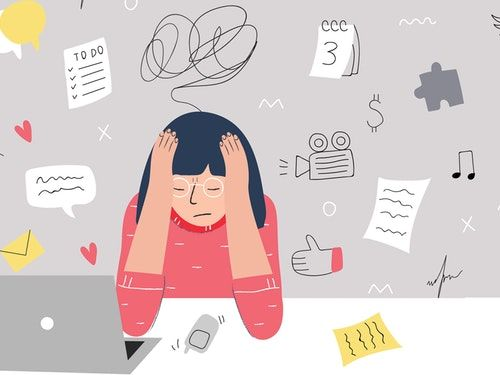

Daftar Artikel
-

Mengenal Pentingnya Kesehatan Mental Pada Remaja
kesehatan mental merupakan kondisi dimana individu memiliki kesejahteraan yang tampak dari dirinya yang mampu menyadari potensinya sendiri, memiliki kemampuan untuk mengatasi tekanan hidup normal pada berbagai situasi dalam kehidupan, mampu bekerja secara produktif dan menghasilkan, serta mampu memberikan kontribusi kepada komunitasnya.baca selengkapnya disini
-

5 Kebiasaaan yang dapat mengganggu kesehatan mental pada remaja
Bukan hanya karena kondisi trauma, kesehatan mental juga dipengaruhi oleh kebiasaan buruk yang kerap dilakukan. Umumnya, kebiasaan ini dilakukan secara tidak sengaja namun dampaknya memengaruhi kesehatan mental seseorang.